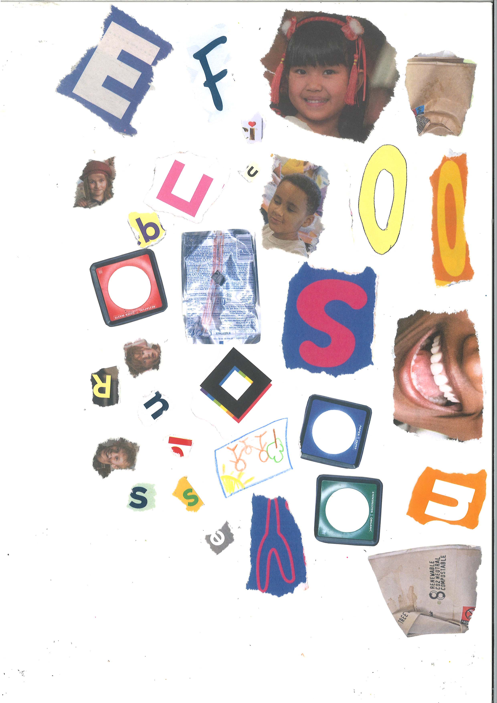

>
"When." animation
As I've started moving forward in life, I’ve begun to feel and notice society’s pressure on women when it comes to having children. Through my animation, I want to capture the internal struggle many women face when their personal decisions and views are seen as somehow making them “less” in the eyes of others. My goal is to create a space where people can exchange ideas and reflect on the childfree movement and the core message of the video and also to challenge sociatal expectations.
Research
Switching from one aspect of the topic to another, I focused on diving into the personal experiences and perspectives of women who have gone through or are still going through that phase of their lives. I read articles and watched visual essays on YouTube to really grasp their stories and understand the reasons behind them. Alongside this, I began educating myself on the craft of animation to further illustrate the subject.
Inspiration
cut-out animation, Unknown
"South Park"
"Paper Plane"
Experiment
Characters/Storyboard
Once I settled on the style, I designed the characters, drew them by hand, then scanned and cut them in Photoshop. After that, I started putting everything together. The scanner did make the stock look too bright, but I worked around it while experimenting with the characters and created the storyboard.

Conclusion
Although I have started to animate the animation, unfortunately, I haven't had the time to finish it up yet, as I plan to expand my research and explore the cultural aspects of the childfree movement, especially how it affects women from different backgrounds. I also want to create something that resonates with a broader group of women, where they can feel accepted and open to share their opinions and perspectives as well.